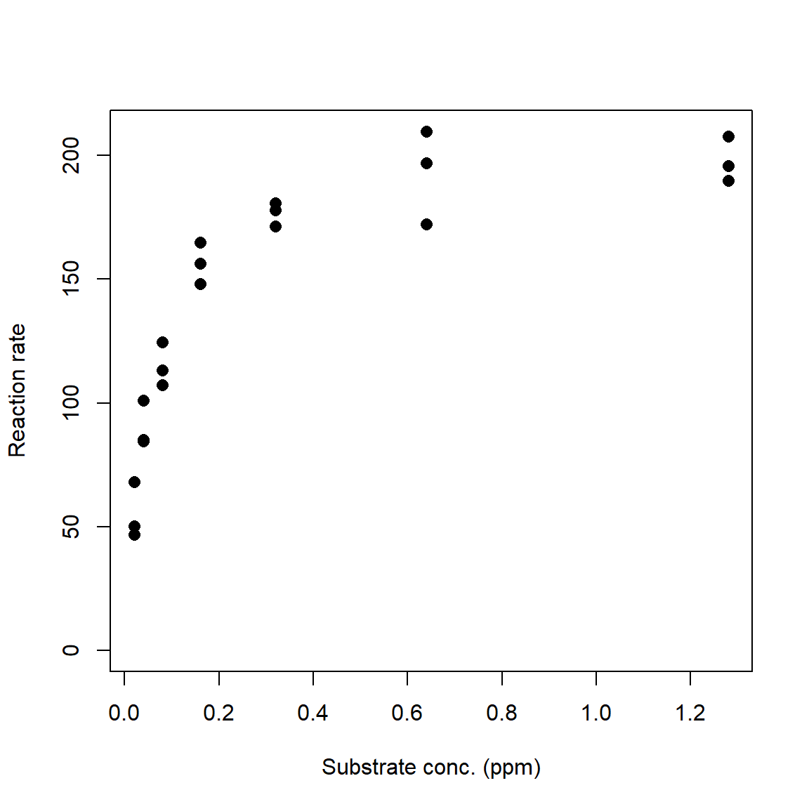
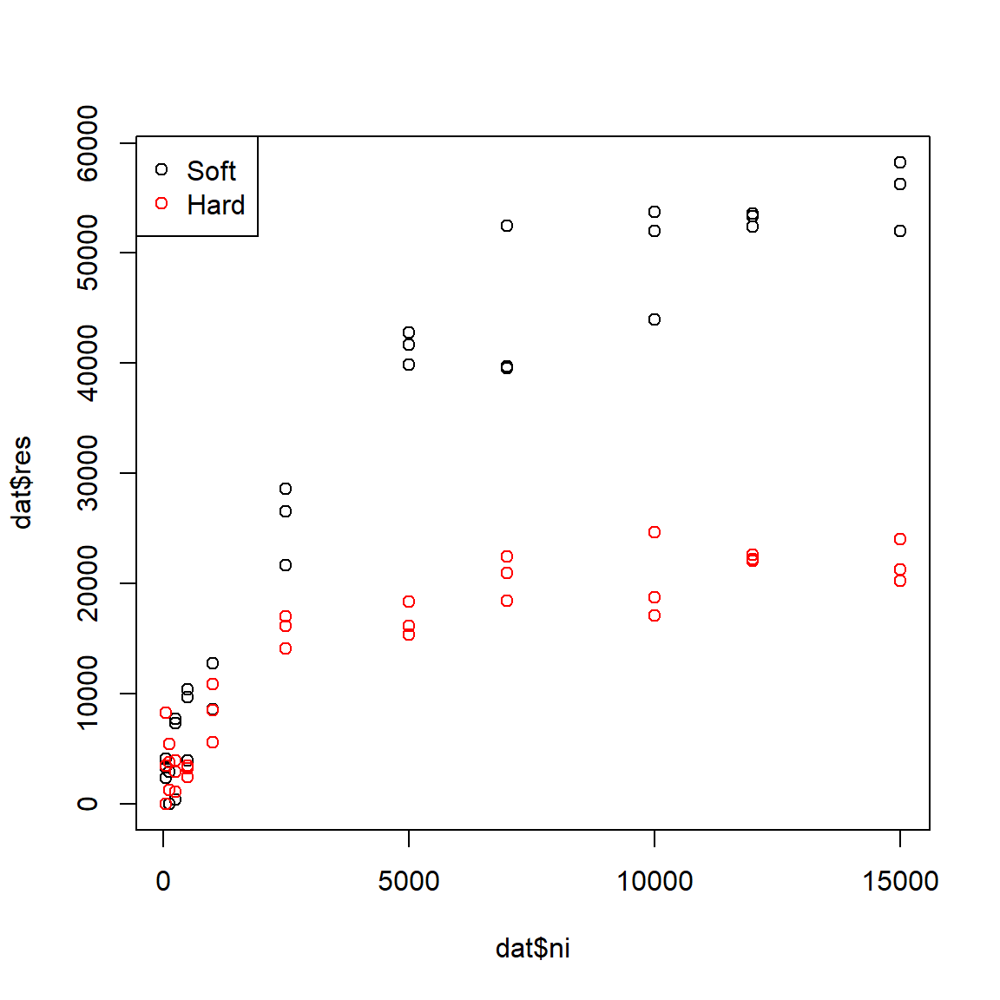
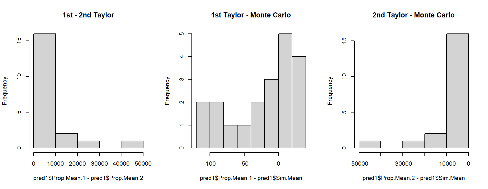
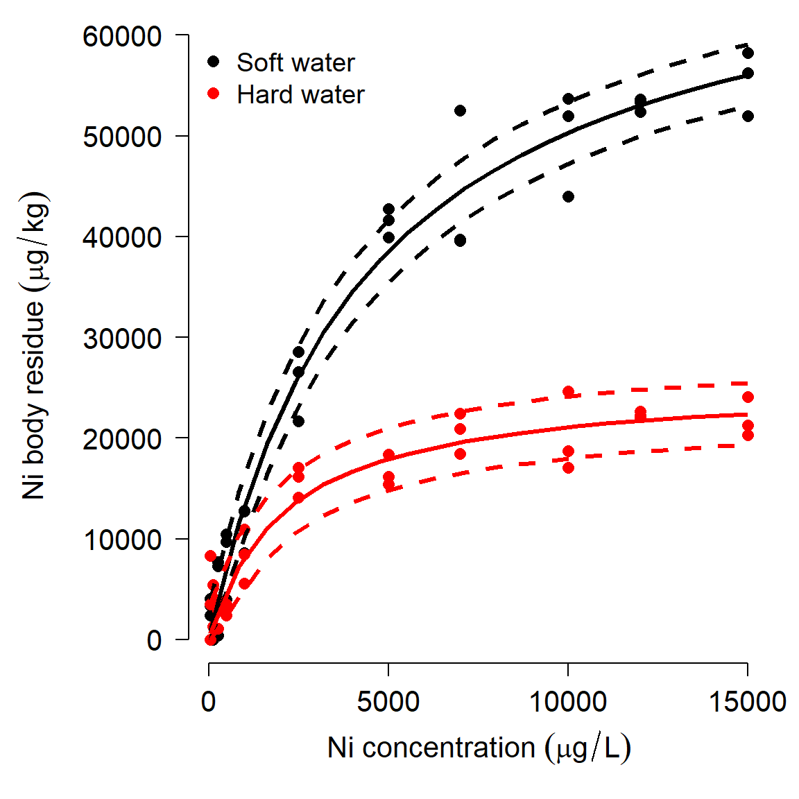

6.3 Michaelis-Menten curves
The Michaelis-Menten model is a nonlinear model that is usually used to describe processes that grow and approach an asymptote. One of the classic use cases is modeling the relationship between biochemical reaction rates and substrate concentrations. The Michaelis-Menten equation takes the general form
\[Y=\frac{aX}{b+X}\]
where a and b are constants.
- a defines the asymptote: the maximum Y value that is approached but never reached.
- b is the Michaelis constant. It represents the X value at which \(Y = a/2\). Interestingly, for any proportion of the form \(c/(c+1)\), where c is a positive integer, the X value where \(Y = (c/(c+1))a\) is \(cb\). For example, the X value when \(Y = (3/4)a\) is \(3b\).
The Michaelis-Menten curve goes by many names. In enzyme kinetics and biochemistry, it is called the Michaelis-Menten curve. Biologists also sometimes call it the Monod function, the Holling type II functional response, or the Beverton-Holt model (the latter name is probably the most common). This diversity of application speaks to the generality of this function. The original definition predicted a reaction rate. However, Michaelis-Menten curves can also be used to model other phenomena. For example, Kunz et al. (2019) and Green et al. (2020) used Michaelis-Menten curves to model the effectiveness of biodiversity monitoring programs.
6.3.1 Example with simulated data
For our simulated example, we will use parameters from the R help page for SSmicmen(), one of the utility functions for working with Michaelis-Menten models.
set.seed(123)
# x values: concentrations in [0.02, 1.28] ppm
x <- rep(2^(1:7)/100, each=3)
# define model parameters
## Vm = a = asymptote
## K = b = Michaelis constant
Vm <- 210
K <- 0.06
# expected values
y <- (Vm*x)/(K+x)
# add residual variation
y <- y + rnorm(length(x), 0, 10)
# plot data
plot(x,y, ylim=c(0, max(y)),
xlab="Substrate conc. (ppm)",
ylab="Reaction rate",
pch=16, cex=1.2)
The R function that fits nonlinear least squares model is nls(). Like lm() and glm(), nls() has a formula interface to specifying models and produces an object that contains many of the diagnostics you need to evaluate your model. Unlike lm() and glm(), nls() usually needs to be supplied starting values for model parameters. These values are used as starting points for the numerical optimization algorithm. There are two basic ways to supply starting values. For some models you can use a “self-starting” model that will guess at good starting values. The other way is for you to guess.
The command below shows how to use the “self-start” Michaelis-Menten model. The righthand side of the formula is the function SSmicmen() (“self-starting Michaelis-Menten”) instead of the model equation. The arguments to a self-start function are usually the predictor variable followed by the names you want to use for the terms in the model. The order of those names matters, because R will use them in the order you provide them. Below we use the default names Vm and K, which R interprets as the asymptote (“Vmax” or “V-max”) and Michaelis constant, respectively. When using the Michaelis-Menten model for something other than enzyme kinetics, I prefer to use a and b instead of Vm and K.
# method 1: fit with self-start models
mod1 <- nls(y~SSmicmen(x, Vm, K))
# same but with different parameter names:
mod1.v2 <- nls(y~SSmicmen(x, a, b))
summary(mod1.v2)##
## Formula: y ~ SSmicmen(x, a, b)
##
## Parameters:
## Estimate Std. Error t value Pr(>|t|)
## a 2.080e+02 4.499e+00 46.23 < 2e-16 ***
## b 5.640e-02 4.995e-03 11.29 7.21e-10 ***
## ---
## Signif. codes: 0 '***' 0.001 '**' 0.01 '*' 0.05 '.' 0.1 ' ' 1
##
## Residual standard error: 10 on 19 degrees of freedom
##
## Number of iterations to convergence: 0
## Achieved convergence tolerance: 2.333e-07If you are fitting a curve for which there is no self-start method, or the self-start method doesn’t work, or if you enjoy reading error messages, you will need to supply starting values. Coming up with good starting values is part art, part science, and part random guessing. For many models you can often estimate some values by thinking about what they represent. For our Michaelis-Menten example, we can see that the curve stops increasing once it gets up to about Y = 200 or so. Thus, 200 might be a good guess for the asymptote (Vm in our code). Likewise, we can see that Y reaches half of its asymptotic value at around X = 0.05. So, 0.05 is probably a decent guess for the Michaelis constant K.
For models with more parameters, you can often guess at 1 or 2 parameters based on the scatterplot, then pick a few representative points and solve for other parameters. For example, if we had guessed that Vm might be 200, we could pick some points from our data and solve for K, conditional on Vm = 200. Below we calculate test.k, which contains estimates of K conditional on Vm = 200. The mean or median of that vector is a good guess for a starting value of K.
test.vm <- 200
test.k <- (test.vm*x)/y-x
mean(test.k)## [1] 0.042005Use these estimates as starting values to nls(). Notice that because we are not using a self-starting model, we must define the model equation manually. The variable names that you use in the formula must match the variable names in the list of starting values exactly.
# method 2: eyeball some starting values
start.list <- list(Vm=200, K=0.042)
mod2 <- nls(y~(Vm*x)/(K+x),
start=start.list)
summary(mod2)##
## Formula: y ~ (Vm * x)/(K + x)
##
## Parameters:
## Estimate Std. Error t value Pr(>|t|)
## Vm 2.080e+02 4.499e+00 46.23 < 2e-16 ***
## K 5.640e-02 4.995e-03 11.29 7.21e-10 ***
## ---
## Signif. codes: 0 '***' 0.001 '**' 0.01 '*' 0.05 '.' 0.1 ' ' 1
##
## Residual standard error: 10 on 19 degrees of freedom
##
## Number of iterations to convergence: 4
## Achieved convergence tolerance: 2.899e-07Both methods estimated parameters that were close to the true values. The coefficients table can be presented in much the same way that the coefficients table for a linear regression or GLM is presented. Unlike linear models, there is no straightforward way to calculate an R2 value for nonlinear models. This is because of two key differences between nonlinear models and linear models:
- Nonlinear models do not have an intercept term, which is implicit in the R2 calculation in linear models.
- In linear models, the equation \({SS}_{total} = {SS}_{model} + {SS}_{residuals}\) is always true, which implies that \({SS}_{model} \le {SS}_{total}\). For nonlinear models, it is not. This means that the usual R2 equation, \({SS}_{model} / {SS}_{total}\), is not guaranteed to be between 0 and 1.
Nevertheless, there are measures of model performance that we can use to approximate an R2 value. One way is to calculate a pseudo-R2 similar to that we calculated for GLM:
\[pseudo-R^{2}=1-\frac{{SS}_{residual}}{{SS}_{total}}\]
This method is recommended by Schabenberger and Pierce (2001) and popular on Stack Overflow, but it can be misleading when model fit is poor (Spiess and Neumeyer 2010). The pseudo-R2 should only ever be considered a rough guide to model fit. Unlike a true R2, which expresses the total variance explained by a model because of the way it is defined to be in the interval [0, 1], the pseudo-R2 is not restricted to [0, 1] and thus is not the same as variance explained. Better fitting models will usually have greater pseudo-R2 than worse fitting models, but this statistic does not represent “variance explained” or anything similar.
There is no base function for pseudo-R2, but it is easy to calculate. The function below takes in the model object mod and the original response variable Y, and returns the pseudo-R2.
pseudoR2 <- function(mod, Y){
ss.tot <- sum((fitted(mod)-mean(Y))^2)
ss.res <- sum(residuals(mod)^2)
1-(ss.res/ss.tot)
}
# test the function:
pseudoR2(mod2, y)## [1] 0.9651684The package rcompanion (Mangiafico 2021) has a function called nagelkerke() that will calculate and present several alternative pseudo-R2 values, including the version above. To use it, you need to specify a null model that includes no predictor variables. Null models usually just use the mean value of Y as the predictor of Y.
library(rcompanion)
# function that uses mean (m) to predict y
# x is included because it is the predictor in mod2
null.fun <- function(x, m){m}
# fit null model using nls().
# notice that m is initialized
# as the mean of y
null.mod <- nls(y~null.fun(x, m),
start=list(m=mean(y)))
# get the pseudo R-squared values (and other stuff)
nagelkerke(mod2, null=null.mod)## $Models
##
## Model: "nls, y ~ (Vm * x)/(K + x), start.list, default, list(50, 1e-05, 0.0009765625, FALSE, FALSE, 0, FALSE), FALSE"
## Null: "nls, y ~ null.fun(x, m), list(m = mean(y)), default, list(50, 1e-05, 0.0009765625, FALSE, FALSE, 0, FALSE), FALSE"
##
## $Pseudo.R.squared.for.model.vs.null
## Pseudo.R.squared
## McFadden 0.315231
## Cox and Snell (ML) 0.965975
## Nagelkerke (Cragg and Uhler) 0.965996
##
## $Likelihood.ratio.test
## Df.diff LogLik.diff Chisq p.value
## -1 -35.497 70.994 3.5836e-17
##
## $Number.of.observations
##
## Model: 21
## Null: 21
##
## $Messages
## [1] "Note: For models fit with REML, these statistics are based on refitting with ML"
##
## $Warnings
## [1] "None"Once you have your fitted model, it’s time to present the model predictions alongside the original data. This process is a little more complicated for nls() outputs than for lm() or glm(). Part of the problem is that calculating confidence intervals for NLS predictions is not straightforward: just like the parameters cannot be calculated directly, the uncertainty also cannot be calculated directly. Instead, we have to approximate the CI. The base R predict() method for nls() outputs does not do this62. The package propagate (Spiess 2018) has function predictNLS() to approximate CI for NLS models. This function uses Monte Carlo sampling (i.e., random simulations) to estimate CI, so it can take a while to run.
library(propagate)
L <- 20
px <- seq(min(x), max(x), length=L)
pred <- predictNLS(mod2,
newdata=data.frame(x=px),
interval="confidence")
# we just need this part:
pred <- pred$summary
# look at result
# (rounded to fit better on the screen)
head(round(pred, 2))## Prop.Mean.1 Prop.Mean.2 Prop.sd.1 Prop.sd.2 Prop.2.5% Prop.97.5% Sim.Mean
## 1 54.46 54.63 2.81 2.82 48.73 60.53 54.66
## 2 125.81 125.90 3.02 3.02 119.57 132.22 125.91
## 3 151.89 151.92 2.52 2.53 146.63 157.21 151.93
## 4 165.41 165.41 2.44 2.44 160.30 170.53 165.41
## 5 173.68 173.67 2.55 2.55 168.34 179.00 173.67
## 6 179.26 179.25 2.70 2.70 173.60 184.90 179.25
## Sim.sd Sim.Median Sim.MAD Sim.2.5% Sim.97.5%
## 1 3.03 54.46 2.86 49.27 61.21
## 2 3.21 125.82 3.08 119.83 132.54
## 3 2.68 151.89 2.57 146.71 157.32
## 4 2.59 165.41 2.49 160.32 170.56
## 5 2.69 173.68 2.60 168.33 179.00
## 6 2.86 179.26 2.75 173.55 184.86The result contains several predicted means, SD, and quantiles for the response variable at every value of the input X values. The different versions are calculated using first- or second-order Taylor series (.1 and .2), or Monte Carlo simulation (Sim.). The first-order Taylor series approximation is also called the Delta method. For each method you can use the mean and SD, or the mean and 95% confidence limits, or use the mean and SD to calculate your own confidence limits. For most models there isn’t much difference between the Taylor series approximations and the Monte Carlo estimates, so use whichever you prefer. In the example below we’ll plot the Taylor series and Monte Carlo CI to compare; in your work you only need to present one (and identify which one you used!).
# 1st order Taylor series
mn1 <- pred$Prop.Mean.1
lo1 <- pred$'Prop.2.5%'
up1 <- pred$'Prop.97.5%'
# Monte Carlo
mn2 <- pred$Sim.Mean
lo2 <- pred$'Sim.2.5%'
up2 <- pred$'Sim.97.5%'
par(mfrow=c(1,2), bty="n", lend=1, las=1,
cex.axis=1.3, cex.lab=1.3)
plot(x,y, ylim=c(0, max(y)),
xlab="Substrate conc. (ppm)",
ylab="Reaction rate",
pch=16, cex=1.2,
main="Taylor series CI")
points(px, lo1, type="l", col="red", lwd=3, lty=2)
points(px, up1, type="l", col="red", lwd=3, lty=2)
points(px, mn1, type="l", col="red", lwd=3)
plot(x,y, ylim=c(0, max(y)),
xlab="Substrate conc. (ppm)",
ylab="Reaction rate",
pch=16, cex=1.2,
main="Monte Carlo CI")
points(px, lo2, type="l", col="red", lwd=3, lty=2)
points(px, up2, type="l", col="red", lwd=3, lty=2)
points(px, mn2, type="l", col="red", lwd=3)
In our simulated example, the Taylor series approximation and Monte Carlo simulations produced nearly identical predictions and CI.
6.3.2 Example with real data
Leonard and Wood (2013) studied the bioaccumulation of nickel (Ni) by four species of invertebrates in different environmental conditions. Invertebrates were held for 14 days in aquaria at varying aqueous Ni concentrations in either hard water (140 mg/L CaCO3) or soft water (40 mg/L CaCO3), after which whole-body Ni residues were measured.

The authors used Michaelis-Menten models to measure the uptake of Ni from the water as a function of Ni concentration. We will focus on part of their dataset, accumulation of Ni by midge Chironomus riparius. Data were extracted from the paper based on parameter estimates in their Table 4 and data in Figure 6. The variables in this dataset are:
| Variable | Units | Meaning |
|---|---|---|
| ni | \(\mu\) mol/L | Concentration of Ni in water |
| res | \(\mu\) mol/kg | Concentration of Ni in body tissues |
| water | N/A | Water treatment: hard or soft (CaCO3 conc.) |
Download the dataset leonard_2013_data.csv and put it in your R home directory.
in.name <- "leonard_2013_data.csv"
dat <- read.csv(in.name, header=TRUE)Part of the original experiment was to see whether water hardness affected uptake of Ni. This is recorded in the factor water in the dataset. Plot the data and color the points by water treatment to see if there are any patterns.
plot(dat$ni, dat$res,
col=ifelse(dat$water=="soft", "black", "red"))
legend("topleft",
legend=c("Soft", "Hard"),
col=c("black", "red"),
pch=1)
The figure suggests that Ni accumulates more slowly in hard water than in soft water, and that less Ni is taken up in hard water. The data seem to follow a curve that approaches an asymptote, around 60000 \(\mu\) mol/kg for soft water and 20000 \(\mu\) mol/kg for hard water. The biological interpretation is that organisms can accumulate Ni from their environment, but eventually the rate of uptake will slow as the organism’s cells and tissues become saturated (or, because they reach an equilibrium with their environment). High levels of Ni accumulation can directly cause mortality, further limiting uptake. We might suspect that a Michaelis-Menten model is appropriate because it (1) has an asymptote term to capture the maximum accumulation; and (2) describes processes where a rate or first derivative slows as the system saturates. Because the dynamics appear so different for the hard water and soft water treatments, we will fit a separate model for each group.
# fit models using nls() and SSmicmen()
flag1 <- which(dat$water == "soft")
flag2 <- which(dat$water == "hard")
mod1 <- nls(res~SSmicmen(ni, a, b),
data=dat[flag1,])
mod2 <- nls(res~SSmicmen(ni, a, b),
data=dat[flag2,])How good are the models? We can calculate the pseudo-R2 values using the function pseudoR2() defined above. Both models look pretty good:
pseudoR2(mod1, dat$res[flag1])## [1] 0.9754908pseudoR2(mod2, dat$res[flag2])## [1] 0.9125796Finally, let’s produce the usual predicted values and 95% CI for each group.
library(propagate)
# values for prediction
L <- 20
px <- dat$ni[which(dat$ni > 0)]
px <- seq(min(px), max(px), length=L)
# calculate predictions and CI
pred1 <- predictNLS(mod1,
newdata=data.frame(ni=px),
interval="confidence")
pred2 <- predictNLS(mod2,
newdata=data.frame(ni=px),
interval="confidence")
# just need this part
pred1 <- pred1$summary
pred2 <- pred2$summaryWhich predictions should we use? It usually doesn’t matter whether you use the 1st order Taylor series, 2nd order Taylor series, or Monte Carlo values, but sometimes it does. We can examine histograms of the differences between the predictions to get a sense of which methods agree with each other.
par(mfrow=c(1,3))
hist(pred1$Prop.Mean.1 - pred1$Prop.Mean.2,main="1st - 2nd Taylor")
hist(pred1$Prop.Mean.1 - pred1$Sim.Mean,main="1st Taylor - Monte Carlo")
hist(pred1$Prop.Mean.2 - pred1$Sim.Mean,main="2nd Taylor - Monte Carlo")
Take a look at the x-axis scales: the differences between the 1st order Taylor series and Monte Carlo predictions are quite small relative to some of the differences between either of those and the 2nd order Taylor series estimates. This suggests that we should use one of the two methods that closely agree with each other. Another way to compare the predictions is to plot them against each other, with a line that shows where predictions are equal.
par(mfrow=c(1,3))
plot(pred1$Prop.Mean.1, pred1$Prop.Mean.2)
abline(a=0, b=1, col="red")
plot(pred1$Prop.Mean.1, pred1$Sim.Mean)
abline(a=0, b=1, col="red")
plot(pred1$Prop.Mean.2, pred1$Sim.Mean)
abline(a=0, b=1, col="red")
The second set of figures shows a serious problem with the 2nd order approximation: it predicts negative concentrations! Because of this, let’s ignore the 2nd order approximation and stick with the Monte Carlo predictions.
# extract predictions and CI
mn1 <- pred1$Sim.Mean
lo1 <- pred1$'Sim.2.5%'
up1 <- pred1$'Sim.97.5%'
mn2 <- pred2$Sim.Mean
lo2 <- pred2$'Sim.2.5%'
up2 <- pred2$'Sim.97.5%'
# fancy plot options
par(mfrow=c(1,1), mar=c(5.1, 7.1, 1.1, 1.1),
las=1, lend=1, bty="n",
cex.axis=1.3, cex.lab=1.3)
# make the plot
plot(dat$ni, dat$res,
col=ifelse(dat$water=="soft", "black", "red"),
pch=16, cex=1.2,
xlab=expression(Ni~concentration~(mu*g/L)),
ylab="")
# custom y axis (need to move outwards)
title(ylab=expression(Ni~body~residue~(mu*g/kg)), line=5)
points(px, lo1, type="l", lwd=3, lty=2)
points(px, up1, type="l", lwd=3, lty=2)
points(px, mn1, type="l", lwd=3)
points(px, lo2, type="l", col="red", lwd=3, lty=2)
points(px, up2, type="l", col="red", lwd=3, lty=2)
points(px, mn2, type="l", col="red", lwd=3)
legend("topleft",
legend=c("Soft water", "Hard water"),
col=c("black", "red"),
pch=16, bty="n", cex=1.2)6.3.3 Alternative strategies for the analysis
In the example above, we fit two separate models to understand the effect of a continuous predictor in two groups: hard water and soft water. It is also possible to estimate the effects in a single model in nls(). This produces a NLS model analogous to ANCOVA: the response variable can vary between groups, and/or the response to the continuous predictor can vary between groups. The models are little more complicated than the analogous LM. We can define models where either the asymptote (a), the Michaelis constant (b), or both a and b vary by group. The deterministic parts of these models can be written compactly as:
| Model | Deterministic part |
|---|---|
| Asymptote by group | \(\eta=\frac{a_{water}X}{b+X}\) |
| Michaelis constant by group | \(\eta=\frac{aX}{b_{water}+X}\) |
| Asymptote and Michaelis constant by group | \(\eta=\frac{a_{water}X}{b_{water}+X}\) |
These models can’t be coded directly in nls(). Instead, we need to rewrite the model first to include some vectors of 1/0 to isolate the observations in each treatment. The equations below show what that looks like.
| Model | Deterministic part |
|---|---|
| Asymptote by group | \(\eta=\frac{{\psi_{hard}a}_{hard}X}{b+X}+\frac{{\psi_{soft}a}_{soft}X}{b+X}\) |
| Michaelis constant by group | \(\eta=\frac{\psi_{hard}aX}{b_{hard}+X}+\frac{\psi_{soft}aX}{b_{soft}+X}\) |
| Asymptote and Michaelis constant by group | \(\eta=\frac{{\psi_{hard}a}_{hard}X}{b_{hard}+X}+\frac{{\psi_{soft}a}_{soft}X}{b_{soft}+X}\) |
In these equations the coefficient \(\psi_{hard}\) takes value 1 for observations from the hard water group and value 0 for observations in the soft water group (\(\psi\) is the Greek letter “psi” and is often used for probabilities or binary variables). The coefficient \(\psi_{soft}\) does exactly the opposite: takes value 1 for observations from the soft water group and value 0 for observations in the hard water group. This form means that the parameters specific to hard water cannot affect observations from soft water and vice versa. These sorts of parameters are called dummy variables63.
We can code each of these models in nls(). For starting values we can use the parameter estimates from the models fitted to each group separately (mod1 and mod2).
flag3 <- which(dat$ni > 0)
dat2 <- dat[flag3,]
dat2$psi.hard <- as.numeric(dat2$water == "hard")
dat2$psi.soft <- as.numeric(dat2$water == "soft")
# asymptote by group:
mod3 <- nls(res~
(psi.hard)*((a.hard*ni)/(b+ni))+
(psi.soft)*((a.soft*ni)/(b+ni)),
data=dat2,
start=list(a.hard=25038, a.soft=71997, b=2000))
# Michaelis constant by group:
mod4 <- nls(res~
(psi.hard)*((a*ni)/(b.hard+ni))+
(psi.soft)*((a*ni)/(b.soft+ni)),
data=dat2,
start=list(a=48500, b.hard=1928, b.soft=4310))
# both parameters by group
mod5 <- nls(res~
(psi.hard)*((a.hard*ni)/(b.hard+ni))+
(psi.soft)*((a.soft*ni)/(b.soft+ni)),
data=dat2,
start=list(a.hard=20000, a.soft=50000,
b.hard=1000, b.soft=4300))For complex models like model 5, you may get the dreaded singular gradient error in nls(), which means that R can’t find a solution from the starting values you provided. You might be able to get the model to work by changing the starting values, but probably not. We’ll come back to model 5 later and explore an alternative way to fit it.
We can use AIC to compare the fits of the models that did work:
AIC(mod3, mod4, mod5)## df AIC
## mod3 4 1256.312
## mod4 4 1293.576
## mod5 5 1250.118We can also use package propagate to calculate fitted values and 95% CI.
px <- seq(min(dat2$ni), max(dat2$ni), length=20)
dx <- expand.grid(ni=px, psi.hard=c(1,0))
dx$psi.soft <- ifelse(dx$psi.hard==1, 0, 1)
pred <- predictNLS(mod5,
newdata=data.frame(dx),
interval="confidence")
pred <- pred$summaryExtract the values you need for a plot:
flag.soft <- which(dx$psi.soft == 1)
flag.hard <- which(dx$psi.hard == 1)
mn.soft <- pred$Sim.Mean[flag.soft]
lo.soft <- pred$'Sim.2.5%'[flag.soft]
up.soft <- pred$'Sim.97.5%'[flag.soft]
mn.hard <- pred$Sim.Mean[flag.hard]
lo.hard <- pred$'Sim.2.5%'[flag.hard]
up.hard <- pred$'Sim.97.5%'[flag.hard]Now make a fancy plot:
# fancy plot options
par(mfrow=c(1,1), mar=c(5.1, 7.1, 1.1, 1.1),
las=1, lend=1, bty="n",
cex.axis=1.3, cex.lab=1.3)
# make the plot
plot(dat2$ni, dat2$res,
col=ifelse(dat2$water=="soft", "black", "red"),
pch=16, cex=1.2,
xlab=expression(Ni~concentration~(mu*g/L)),
ylab="")
# custom y axis (need to move outwards)
title(ylab=expression(Ni~body~residue~(mu*g/kg)), line=5)
points(px, lo.soft, type="l", lwd=3, lty=2)
points(px, up.soft, type="l", lwd=3, lty=2)
points(px, mn.soft, type="l", lwd=3)
points(px, lo.hard, type="l", col="red", lwd=3, lty=2)
points(px, up.hard, type="l", col="red", lwd=3, lty=2)
points(px, mn.hard, type="l", col="red", lwd=3)
legend("topleft",
legend=c("Soft water", "Hard water"),
col=c("black", "red"),
pch=16, bty="n", cex=1.2)Complicated nonlinear models like model 5 are difficult to fit using the optimization algorithms in R. There is an alternative set of techniques called Markov chain Monte Carlo (MCMC) that can be used for fitting complex models. MCMC uses long chains of random samples to try lots of different possible values for each parameter, and adjusts parameters at each iteration (step in the chain) depending on how well or poorly the model fits with the current parameters. A more in-depth explanation of MCMC was provided in Module 1.
In the next example we will use MCMC to refit model 5. This also turns your analysis into a Bayesian analysis instead of a frequentist analysis. For MCMC we will need the program JAGS as well as the R packages rjags and R2jags.
mod.name <- "mod05.txt"
sink(mod.name)
cat("
model{
# priors
## element 1 = soft
## element 2 = hard
### asymptote
for(i in 1:2){a.water[i]~dunif(1e3, 1e5)}
### Michaelis constant
for(i in 1:2){b.water[i]~dunif(1e2, 1e4)}
## residual SD -> precision (tau)
sigma ~ dunif(0, 1e4)
tau.y <- 1 / (sigma * sigma)
# likelihood
for(i in 1:N){
y[i] ~ dnorm(eta[i], tau.y)
eta[i] <- (a.water[water[i]] *
x[i])/(b.water[water[i]]+x[i])
}# i for N
}#model
", fill=TRUE)
sink()library(R2jags)
library(rjags)
# define initial values for MCMC chains
init.fun <- function(nc){
res <- vector("list", length=nc)
for(i in 1:nc){
res[[i]] <- list(
a.water=runif(2, 1e3, 1e5),
b.water=runif(2, 1e2, 1e4),
sigma=runif(1, 0.1, 1e4))
}#i
return(res)
}
nchains <- 3
inits <- init.fun(nchains)
# parameters to monitor
params <- c("a.water", "b.water", "sigma")
# MCMC parameters
n.iter <- 5e4
n.burnin <- 1e4
n.thin <- 100
# package data for JAGS
in.data <- list(y=dat2$res,
x=dat2$ni,
N=nrow(dat2),
water=dat2$psi.hard+1)
model05 <- jags(data=in.data, inits=inits,
parameters.to.save=params,
model.file=mod.name,
n.chains=nchains, n.iter=n.iter,
n.burnin=n.burnin, n.thin=n.thin)#jags## Compiling model graph
## Resolving undeclared variables
## Allocating nodes
## Graph information:
## Observed stochastic nodes: 66
## Unobserved stochastic nodes: 5
## Total graph size: 284
##
## Initializing model
##
##
|
| | 0%
|
|+++++ | 10%
|
|++++++++++ | 20%
|
|+++++++++++++++ | 30%
|
|++++++++++++++++++++ | 40%
|
|+++++++++++++++++++++++++ | 50%
|
|++++++++++++++++++++++++++++++ | 60%
|
|+++++++++++++++++++++++++++++++++++ | 70%
|
|++++++++++++++++++++++++++++++++++++++++ | 80%
|
|+++++++++++++++++++++++++++++++++++++++++++++ | 90%
|
|++++++++++++++++++++++++++++++++++++++++++++++++++| 100%
##
|
| | 0%
|
|* | 2%
|
|** | 5%
|
|**** | 8%
|
|***** | 10%
|
|****** | 12%
|
|******** | 15%
|
|********* | 18%
|
|********** | 20%
|
|*********** | 22%
|
|************ | 25%
|
|************** | 28%
|
|*************** | 30%
|
|**************** | 32%
|
|****************** | 35%
|
|******************* | 38%
|
|******************** | 40%
|
|********************* | 42%
|
|********************** | 45%
|
|************************ | 48%
|
|************************* | 50%
|
|************************** | 52%
|
|**************************** | 55%
|
|***************************** | 58%
|
|****************************** | 60%
|
|******************************* | 62%
|
|******************************** | 65%
|
|********************************** | 68%
|
|*********************************** | 70%
|
|************************************ | 72%
|
|************************************** | 75%
|
|*************************************** | 78%
|
|**************************************** | 80%
|
|***************************************** | 82%
|
|****************************************** | 85%
|
|******************************************** | 88%
|
|********************************************* | 90%
|
|********************************************** | 92%
|
|************************************************ | 95%
|
|************************************************* | 98%
|
|**************************************************| 100%The most important part of the output is here:
out <- model05$BUGSoutput$summary
# rounded to fit better on screen:
print(round(out, 1))## mean sd 2.5% 25% 50% 75% 97.5% Rhat n.eff
## a.water[1] 72696.1 3204.7 66797.5 70527.3 72560.4 74638.8 79153.5 1 1200
## a.water[2] 25692.2 1840.1 22460.4 24394.4 25641.5 26795.7 29748.8 1 1200
## b.water[1] 4450.3 536.4 3527.9 4067.7 4424.8 4771.7 5598.3 1 1200
## b.water[2] 2190.3 593.7 1282.1 1770.2 2124.9 2507.9 3634.0 1 1200
## deviance 1245.8 3.4 1241.1 1243.2 1245.1 1247.6 1253.7 1 1200
## sigma 3067.9 289.0 2550.6 2867.5 3046.8 3243.5 3666.6 1 1200The parameter estimates (mean) are close to their true values. The next few columns show SD and various quantiles of the posterior distribution of each parameter. The Gelman-Rubin statistic, \(\hat{R}\) (“R-hat”) are <1.01 for each parameter, suggesting that the MCMC chains converged. Using JAGS can be overkill sometimes, but might be the only way to get a model to fit (and there is no guarantee that JAGS can fit a model!). This method has the advantage of fitting the model directly, without adding in dummy variables for each treatment. We can use the MCMC samples saved in the model object to generate model predictions. The intervals produced for this plot are not true confidence intervals (CI), but their Bayesian analogue, credible intervals (CRI).
# MCMC samples
z <- model05$BUGSoutput$sims.list
# make data frame for prediction:
px <- seq(min(dat2$ni), max(dat2$ni), length=20)
# water: 1 = soft, 2 = hard
dx <- expand.grid(ni=px, water=1:2)
dx$lo <- NA
dx$up <- NA
dx$mn <- NA
mx.mn <- matrix(NA, nrow=nrow(dx), ncol=nrow(z[[1]]))
mx.lo <- mx.mn
mx.up <- mx.mn
for(i in 1:ncol(mx.mn)){
eta <- (z$a.water[i,dx$water]*dx$ni)/(
z$b.water[i,dx$water]+dx$ni)
mx.mn[,i] <- eta
mx.lo[,i] <- pmax(0, eta-mean(z$sigma[,1]))
mx.up[,i] <- eta+mean(z$sigma[,1])
}
dx$lo <- apply(mx.lo, 1, median)
dx$up <- apply(mx.up, 1, median)
dx$mn <- apply(mx.mn, 1, median)
# make the plot
flag.soft <- which(dx$water == 1)
flag.hard <- which(dx$water == 2)
# fancy plot options
par(mfrow=c(1,1), mar=c(5.1, 7.1, 1.1, 1.1),
las=1, lend=1, bty="n",
cex.axis=1.3, cex.lab=1.3)
# make the plot
plot(dat2$ni, dat2$res,
col=ifelse(dat2$water=="soft", "black", "red"),
pch=16, cex=1.2,
xlab=expression(Ni~concentration~(mu*g/L)),
ylab="")
# custom y axis (need to move outwards)
title(ylab=expression(Ni~body~residue~(mu*g/kg)), line=5)
points(px, dx$lo[flag.soft], type="l", lwd=3, lty=2)
points(px, dx$up[flag.soft], type="l", lwd=3, lty=2)
points(px, dx$mn[flag.soft], type="l", lwd=3)
points(px, dx$lo[flag.hard], type="l", col="red", lwd=3, lty=2)
points(px, dx$up[flag.hard], type="l", col="red", lwd=3, lty=2)
points(px, dx$mn[flag.hard], type="l", col="red", lwd=3)
legend("topleft",
legend=c("Soft water", "Hard water"),
col=c("black", "red"),
pch=16, bty="n", cex=1.2)
In this case, we got a model fit similar to what nls() produced, and similar predicted values. For this case, JAGS and MCMC are probably more trouble than they are worth. If you are having trouble getting nls() to fit a model, MCMC may be a more effective alternative…if the model can be fit and if the pattern is really there.